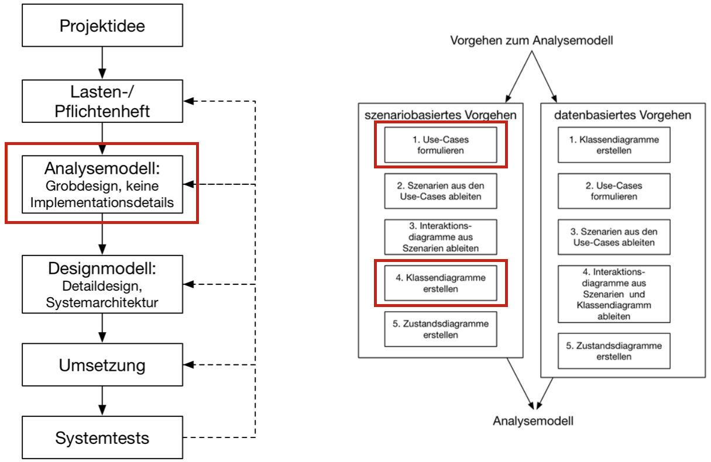
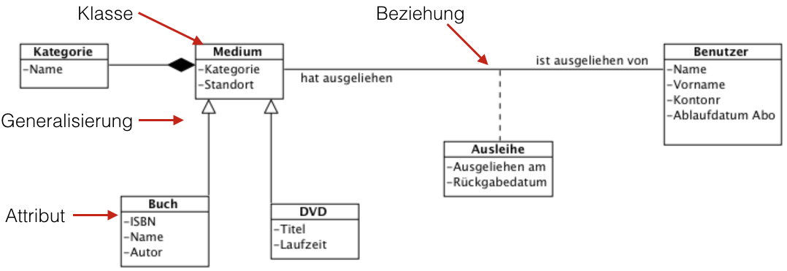

{% extends "../_base_template.html" %}
{% block title %}Lektion 4 - OOA - Klassenmodell{% endblock %}

{% block sections %}
<section data-markdown>
<textarea data-template>
<i class="fas fa-graduation-cap"></i> Thema: OOA - Klassenmodell
=============================

Heutiges Ziel
-------------

* Besprechung der Hausaufgabe: Use-Case-Beschreibung
* Sie wissen, was objektorientierte Klassen/Objekte, Assoziationen, Attribute sind
* Sie können durch Analyse Fachklassen finden und diese in einem UML-Diagramm darstellen
* Sie können durch Analyse Attribute und Generalisierungen der Fachklassen herleiten
* Sie kennen Bewertungskriterien für das Klassenmodell

### Hausaufgaben

* Fertigstellen des Klassenmodells:
    * UML mit Klassen mit Attributen
    * Generalisierungen (Vererbung)
    * Versuchen Sie bereits, Beziehungen zwischen den Klassen zu finden.

</textarea>
</section>

<section data-markdown data-separator-notes="^Note:">
<textarea data-template>
<i class="fas fa-flask"></i> Wo stehen wir?
===========

Wir sind an der fachlichen Analyse und erarbeiten exemplarisch das Klassenmodell:



Wir verzichten bewusst auf die weitere Analyse aus Zeitgründen.

Note:
* Wir werden in der Design-Phase Sequenz- Aktivitäts und Zustandsdiagramme kennenlernen.

</textarea>
</section>

<section data-markdown data-separator-notes="^Note:">
<textarea data-template>
<i class="fas fa-flask"></i> Was ist ein Klassenmodell?
===========

Das **Klassenmodell** bildet Objekte, resp. "Typen von Objekten", und deren Attribute und Beziehungen ab.

Dabei orientiert sich das Klassenmodell an der realen Welt, so wie auch wir "Objekte wahrnehmen".

Für die formelle Darstellung verwenden wir das **UML-Klassendiagramm**, um das Klassenmodell zu erstellen.

**Ziel**: Die Objekte / Klassen der realen Welt / der Problemstellung möglichst wirklichkeitsgetreu formal darzustellen.

**Frage**: Gehört das Klassenmodell zum **dynamischen** oder **statischen** Modell?

<!-- .element class="fragment" --> **Antwort**: Klar zum statischen Modell. Abläufe werden im Klassenmodell keine modelliert.

Note:
* Objekte wahrnehmen: Ein Ojekt HAT Attribute, wir können damit etwas MACHEN (Operationen), und ein
  Objekt steht in Beziehung zu anderen Objekten (z.B. ein AUTO hat 4 Räder).

</textarea>
</section>


<section>
    <section data-markdown data-separator-notes="^Note:">
    <textarea data-template>
    <i class="fas fa-flask"></i> UML-Klassendiagramm
    ===========

    

    Das Klassendiagramm
    * zeigt die konkreten Objekte resp. **Klassen** von Objekten wie Dinge / Personen / Rollen / Orte / Behälter
    * zeigt, welche **Attribute** die Klassen haben
    * zeigt, welche **Beziehungen** zwischen den Klassen existieren
    * zeigt **Generalisierungen** (Vererbungen) von Klassen
    * zeigt die Operationen, welche mit den Objekten ausgeführt werden können (hier nicht ersichtlich)
    * in der Analyse-Phase: entspricht NICHT der technischen Umsetzung! Die technische Implementation wird bewusst weggelassen. Konzentration auf das Business-Modell!
    </textarea>
    </section>


    <section data-markdown data-separator-notes="^Note:">
    <textarea data-template>
    <i class="fas fa-flask"></i> Was sind OO-Klassen?
    ===========

    **Fragen:**

    * Was ist eine **Klasse** im objektorientierten Sinn?
    * Aus was besteht eine objektorientierte Klasse?

    </textarea>
    </section>

    <section data-markdown data-separator-notes="^Note:">
    <textarea data-template>
    <i class="fas fa-flask"></i> Was ist eine (objektorientierte) Klasse?
    ===========

    * <!-- .element class="fragment" --> Eine **Klasse** ist ein Bauplan für konkrete **Objekte**
    * <!-- .element class="fragment" -->  Wie eine Blaupause eines Hauses zeigt die Klasse, wie ein späteres Objekt "auszusehen hat"
    * <!-- .element class="fragment" -->  Sie definiert somit formal konkrete Objekte durch eine Beschreibung.
    </textarea>
    </section>

    <section data-markdown data-separator-notes="^Note:">
    <textarea data-template>
    <i class="fas fa-flask"></i> Aus was besteht eine objektorientierte Klasse?
    ===========

    * <!-- .element class="fragment" --> Eine Klasse hat einen Namen
    * <!-- .element class="fragment" --> Sie hat Attribute (Eigenschaften)
    * <!-- .element class="fragment" --> Sie definiert Operationen (Methoden), welche auf die Attribute eine Auswirkung haben
    * <!-- .element class="fragment" --> Durch Verbindugen mit anderen Klassen (über Attribute/Operationen) werden auch Beziehungen modelliert
    </textarea>
    </section>
</section>

<section data-markdown data-separator-notes="^Note:">
<textarea data-template>
<i class="fas fa-flask"></i> Finden von Klassen
===========

**Frage**: Wie gehen Sie vor, um Klassen für das Klassenmodell/Klassendiagramm zu finden?

* <!-- .element class="fragment" --> **Dokumentanalyse**: Pflichtenhefte, Ausdrucke, Rechnungen, Screenshots ... Also alles, was der Kunde an Unterlagen verfügbar hat.
* <!-- .element class="fragment" --> **Analyse der Use-Cases**: Die erstellen Use-Cases sollten bereits recht umfassend mögliche Klassenkandidaten erwähnen.

Note:
* Objekte wahrnehmen: Ein Ojekt HAT Attribute, wir können damit etwas MACHEN (Operationen), und ein
  Objekt steht in Beziehung zu anderen Objekten (z.B. ein AUTO hat 4 Räder).

</textarea>
</section>


<section data-markdown data-separator-notes="^Note:">
<textarea data-template>
<i class="fas fa-flask"></i> Übung: Finden von Klassen, Attributen, Generalisierungen
===========

**Aufgabe:**

* Erstellen Sie ein erstes Klassenmodell mit Klassen, Attributen und Generalisierungen für das Bibliothekssystem
* Material:
  * **Checkliste 002 - Klassen** [(Moodle)](https://moodle.bztf.ch/pluginfile.php/26810/mod_folder/content/0/Checkliste_002_Klassen.pdf?forcedownload=1)
  * **Checkliste 004 - Attribute** [(Moodle)](https://moodle.bztf.ch/pluginfile.php/26810/mod_folder/content/0/Checkliste_004_Attribute.pdf?forcedownload=1)
  * **Checkliste 005 - Generalisierungen** [(Moodle)](https://moodle.bztf.ch/pluginfile.php/26810/mod_folder/content/0/Checkliste_005_Generalisierung.pdf?forcedownload=1)
  * **Anforderungen an das Bibliothekssystem** [(Moodle)](https://moodle.bztf.ch/mod/resource/view.php?id=15218)
* Nehmen Sie die Checklisten zur Hand und lesen Sie sie durch.
* Suchen Sie mögliche Klassen-Kanditaten im Dokument "Anforderungen an ein Bibliothekssystem" (Abschnitt **Konstruktive Schritte** in der Checkliste 002)
* Suchen Sie mögliche Klassen-Attribute (Abschnitt **Konstruktive Schritte** in der Checkliste 004)
* Suchen Sie mögliche Klassen-Generalisierungen (Abschnitt **Konstruktive Schritte** in der Checkliste 005)
* Erstellen Sie ein UML-Klassendiagramm in VisualParadigm mit Klassen, Attributen, Generalisierungen
* **Bewerten** Sie Ihr Modell anhand des Abschnitts **Analytische Schritte** in den Checklisten: Dieses Kapitel hilft Ihnen, das Klassenmodell zu verbessern / zu bewerten.

* **Bedenken Sie** Dies ist das Analysemodell: Es zeigt noch KEINE technischen Zusammenhänge! Machen Sie sich noch KEINE Gedanken, wie Sie dies technisch umsetzen wollen!

**Abgabe**

* Das UML-Diagramm wie oben beschrieben als Hausaufgaben-Abgabe einreichen

Note:
Als kurze Einführung zeige ich ein Beispiel anhand der Checkliste 002:
* VisualParadigm: Wie macht man ein Klassendiagramm
* Hinweis auf Aufbau der Checkliste: Konstruktive Schritte, Analytische Schritte
* erstes Beispiel zum Finden einer Klasse am Anforderungs-Dokument
* Schüler arbeiten lassen
* Hinweis auf Hausaufgabe
</textarea>
</section>

{% endblock %}
